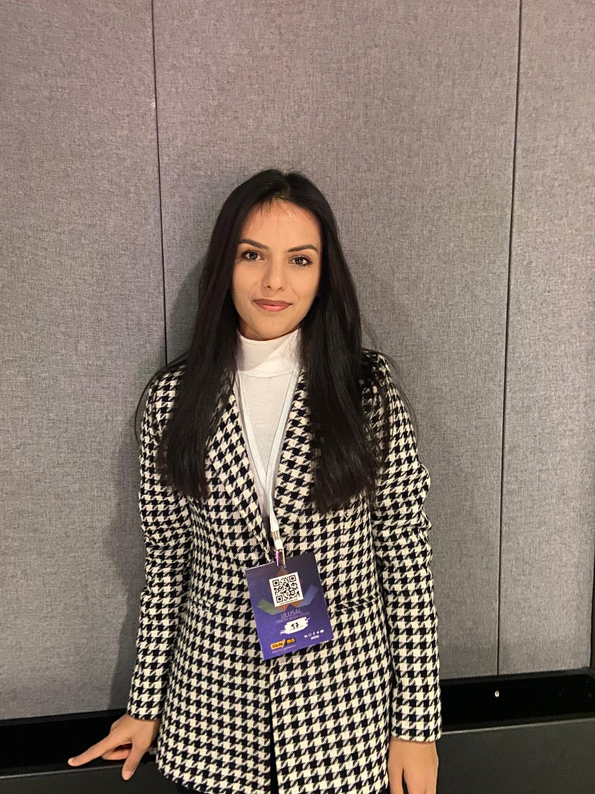
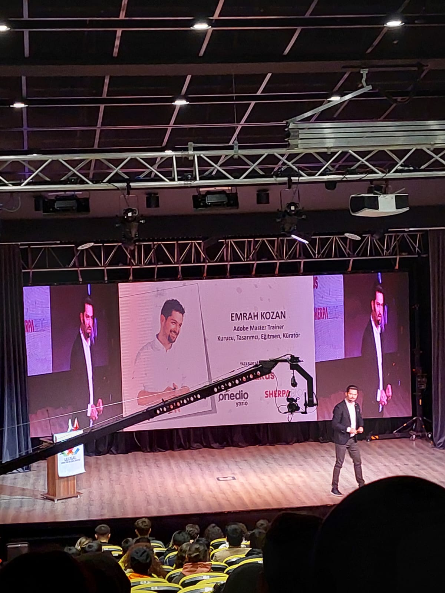

GİZEM ALTAY

Hakkımda
Bireysel gelişim odaklı ilerleyen azmim ile başarılı olduğuma inanarak ilerliyorum.
Bartın Üniversitesi Yönetim Bilişim Sistemleri bölümünde öğrencilik hayatına devam etmekte olup
aynı zamanda Bilgisayar Programcılığı bölümüne de çift anadal yaparak kariyer yelpazemi genişletiyorum.
Eğitim hayatım boyunca Yazılım Proje / Ürün Yönetimi ve Mobil Programlama ,Yazılım Geliştirme , Web Geliştirme
alanlarında aldığım
eğitimler ilekendimi geliştirmeye çalışıyorum. .İlk iş deneyimime Makas Yazılımda React Native Developer stajyer
olarak başladım.
İlgilenen işletmeler/kurumlara, destek sağlayabileceğimi, stajyerlik için açık olduğumu bildirmek istiyorum.
Kurslarım & Sertifikalarım
- BTK Akademi - Çevik Proje Yönetimi
- Udemy - React Native ile Mobil Uygulama Geliştirme
- BTK Akademi - Bilgi Teknolojilerine Giriş
- Udemy - React Native ile Mobil Uygulama Geliştirme
- BTK Akademi - Sosyal Ağlar
- Udemy - React Native ile Mobil Uygulama Geliştirme
- Bursa Uludağ Teknik Üniversitesi - Etkili Sunum Teknikleri
- Orta Doğu Teknik Üniversitesi - YMG+ Yazılım Katılım Sertifikası
Eğitim Serüvenim
Bartın Üniversitesi
- Lisans/Yönetim Bilişim Sistemleri-Anadal
- Önlisans/Bilgisayar Programcılığı-Çif Anadal
Çalışma Deneyimi
Makas Yazılım/React Native Developer Stajyer
- Ekip ile birlikte ortak bir proje geliştirirken takım çalışmasına dair yetkinlik kazandım.
React Native Programlama dilinde temel seviyede beceri sahibi oldum.
YBSBLOG/Moderatör
- Sorumluluk ve iletişim becerim gelişti.Bir ekip olarak görev paylaşımı içerisinde çalışma konusunda
yetkinlik kazandım.
Akademik Başarılar
- 2209-A - Üniversite Öğrencileri Araştırma Projeleri Destekleme Programı kapsamında geliştirdiğimiz Proje
Yürütücülüğünü yaptığım Pandemi Sürecinde Farklı Ders Türlerinin Uzaktan Eğitimde Etkinliğinin Belirlenmesi ve
Geliştirilmesi adlı projemiz destek almaya hak kazanmıştır.
Sosyal Medya Hesaplarım
 Linkedln
Linkedln
 GitHub
GitHub
 E-Mail
E-Mail
Sosyal Faaliyetler
Ulusal 7.Yönetim Bilişim Zirvesi

Antalya Akdeniz Üniversitesi Ulusal 7.Yönetim Bilişim Zirvesi etkinliğine Bartın
Üniversitesi YBS kulübü
olarak katıldık.
İlgi Alanlarım
- Film
- Dizi
- Kitap
- Şeker Portakalı
- Rework
- Uçurtma Avcısı